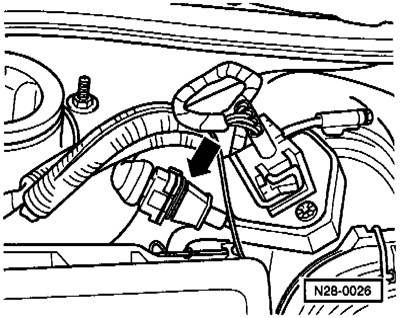
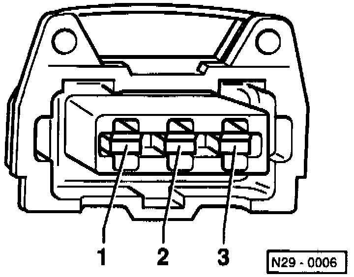
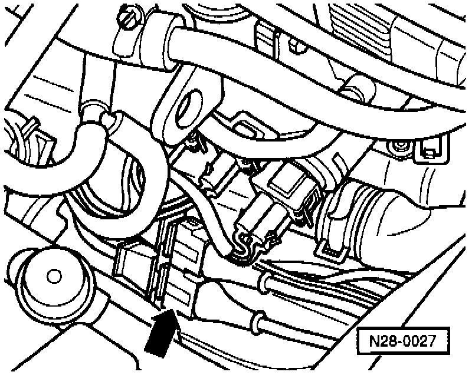
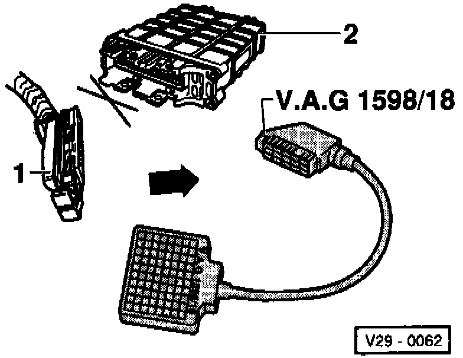

Knock Sensor: Testing and Inspection
Knock Sensor (KS) and Knock Control:Checking:
Special tools, testers and auxiliary items:
- VAG 1551/1552 scan tool with VAG 1551/3 adapter cable.
- VAG 1598/18 test box.
- Multimeter (Fluke 83 or equivalent).
- Connector test kit VW 1594.
- Wiring diagram.
Test sequence:
- Engine running at idle.
- Connect VAG 1551/1552 scan tool and select "Engine Electronics" with address word 01. Testing and Inspection
Indicated on display
- Press buttons -0- and -8- to select "Read Measuring Value Block" function 08 and press -Q- button to confirm input.

Indicated on display
Press buttons -0-, -4- and -8- to input display group 045 (cylinders 1-4), or press buttons -0-, -4- and -6- to input display group 046 (cylinders Sand 6), and press -Q- button to confirm input.

Indicated on display (1-4 = display fields)
NOTE:
The check must be carried out during a test drive as the knock control is only active with an engine load exceeding 3 ms.
- Carry out a test drive and observe the knock control specifications on display (second technician necessary).

- Read the readiness code. If DTC memory has been erased, verify repair via appropriate display group See Readiness code, creating. Testing and Inspection
- Press -> button.
- Press buttons -0- and -6- to select "End Output" function 06 and press -Q- button to confirm input.
Evaluating display group 045 and 046

Continuation

- Separate white 3-pin connector to Knock Sensor (KS) 1 -G61- (arrow).

- Measure resistance between terminals 1 and 2, 1 and 3 and 2 and 3 on KS connector.
Specification: infinite ohms.
- Connect VAG 1598/18 test box to ECM wiring harness (arrow).

- Check wiring between test box and white 3-pin connector for open circuit according to wiring diagram.
- Terminal 1 and test box socket 34.
- Terminal 2 and test box socket 33.
- Terminal 3 and test box socket 56.
Resistance: max. 1.5 ohms.
- Additionally, check wires for short to one another.
- Terminal 3 and test box socket 34.
- Terminal 3 and test box socket 33.
- Terminal 2 and test box socket 34.
Specification: infinite ohms.
If no wiring malfunction is detected:
- Loosen knock sensor and tighten again to 20 Nm (15 ft.lb).
If the malfunction is still present (malfunction again in DTC memory):
- Replace Knock Sensor (KS) 1 -G61-
- Read the readiness code. If DTC memory has been erased, verify repair via appropriate display group See Readiness code, creating. Testing and Inspection

- Separate black 3-pin connector to Knock Sensor (KS) 2 -G66- (arrow).

- Measure resistance between terminals 1 and 2, 1 and 3 and 2 and 3 on KS connector.
Specification: infinite ohms.

- Connect VAG 1598118 test box to ECM wiring harness (arrow).

- Check wiring between test box and black 3-pin connector for open circuit according to wiring diagram.
- Terminal 1 and test box socket 57.
- Terminal 2 and test box socket 33.
- Terminal 3 and test box socket 56.
Resistance: max. 1.5 ohms.
- Additionally, check wires for short to one another.
- Terminal 3 and test box socket 57.
- Terminal 3 and test box socket 33.
- Terminal 2 and test box socket 57.
Specification: infinite ohms.
If no wiring malfunction is detected:
- Loosen knock sensor and tighten again to 20 Nm (15 ft.lb).
If the malfunction is still present (malfunction again in DTC memory):
- Replace Knock Sensor (KS) 2 -G66-.
- Read the readiness code. If DTC memory has been erased, verify repair via appropriate display group See Readiness code, creating. Testing and Inspection